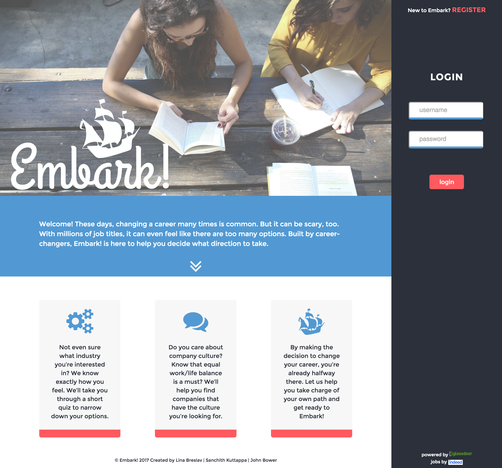

EMBARK!
view the project live | view the code on github
About
This is the final project I'm working on for The Iron Yard. I have two weeks to take this project from research and discovery to the final live, coded version. This project involves the design and development of the UI / UX and integration with backend. This is a group project, with two of us on the front end and a Python developer for the backend.
Features
1. Industry suggestion quiz
2. Tool that takes industry suggestions and outputs real-time job suggestions based on must-haves drawn from glassdoor data
Goal
To create a smart, modern, clean, inspirational and exciting site/tool geared towards career-changers who don’t know where to start.
Technology / Tools
HTML5, CSS3, Sass, Javascript, jQuery, Sketch, Illustrator, Trello
Design Process Examples
Process
1. Trello board for task breakdown, team member assignments and deadlines.
2. Research, brainstorming, design discussions - wordlist, SWOT and website analysis, competitive market study, persona creation.
3. Wireframes in Sketch
4. Branding - used styletile as a guide. A unique theme, with color pallette, typographic treatment, inspirational patterns and images.
5. Logo design
6. Mockups using the finalized wireframes and styletile
7. Code using HTML5, CSS3, JS and jQuery.
8. Early integration with backend.
9. Functionality and user testing.
Challenges
The main challenge we faced was making the website feel modern, trendy and exciting while simultaneously feeling trustworthy and authoritative. We achieved this through a consistent grid, bold colors and a clean interface.
Selected Screenshots
